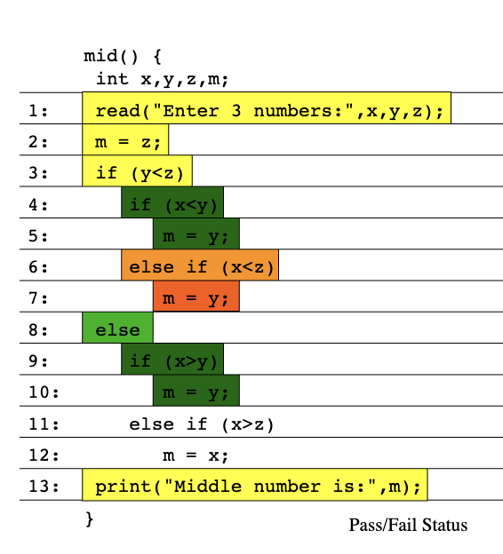
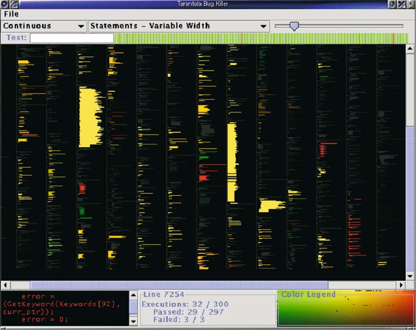
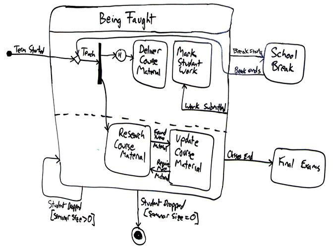

csc 510-001, (1877)
fall 2024, software engineering
Tim Menzies, timm@ieee.org, com sci, nc state
home :: syllabus :: corpus :: groups :: moodle :: license

Testing
Concepts to know
- V-diagram, unit/system testing, integration, acceptance, alpha/beta testing.
- Functional vs non-functiona requirements
- Trade-offs in non-functional requirements (give an example of how helping one NFR can hurt another)
- Code has faults. Will it have failures?
- The TDD mantra.
- Regression testing. Problems with very large regressions tests. Test case priorization
- Black-box, white-box testing. Formal methods. When to do each?
- Black-box:
- Metamorphic testing (give an example)
- Diversity sampling. e.g. all-pairs testing
- Fuzzing: grammar-based, mutation
- White-box:
- Coverage: functions, statements, du, branch
- Symbolic execution: how to use it for test case minimination
- Formal methods:
- Use of theorem proving for product-line testing
Quotes
- f u cn rd ths, u cn gt a gd jb n sftwr tstng.
- Anonymous
- “Program testing can be a very effective way to show the presence of
bugs, but is hopelessly inadequate for showing their absence.”
- Edsger Dijkstra
- If debugging is the process of removing bugs, then programming must
be the process of putting them in.
- Edsger Dijkstra
- Beware of bugs in the above code; I have only proved it correct, not
tried it.
- Donald Knuth
- … it is a fundamental principle of testing that you must know in
advance the answer each test case is supposed to produce. If you don’t,
you are not testing; you are experimenting.”
- Kernighan and Plauger
- Debugging is like a mystery novel where you are both the detective
and the murderer.
- Anon
Why test?
- Check some code
- Re-check some code (regression testing; has anything new broken anything old)?
- Good manners for your team mates
- Do not commit things that will hurt them
- Because there is so much to test for
- Functional requirements: what the system does
- Non-functional requirements: how the to judge the operation of a system (more general that the functional requirements)
- Conformance to the requirements
- But whose’ requirements?
- Welcome to the wonder of multi-stakeholder systems
- Even if we try to make it complete,complete for who
- Stakeholders, competing goals
- Toronto CS department. Information system
- “good” if parents can track their children
- “good” if students can maintain their privacy
- But whose’ requirements?

- Examples non-functional
- For “maintainability?”
- how to test that, except to watch the code for years to come?
- Performance:
- Energy usage
- Network request response time?
- Minimize variance in query spike time
- Documentation :
- Incomplete, always
- For “usability”?
- For other “ilities” (Maintainability, Customizanility, Scalability, Capacity, Availability, Reliability, Recoverability, Maintainability, Serviceability, Security, Regulatory, Manageability, Environmental, Data Integrity, Usability, Interoperability
- And the list goes one and on and on
- For “maintainability?”

V-Diagram

- verification = are we building the system right?
- validation = are we building the right system?
- “Without requirements or design, programming is the art of adding bugs to an empty text file.” – Louis Srygley
- Brooks, Mythical
Man Month. Effort is
- 1/3 th planning
- 1/6 th coding
- 1/4 th unit testing : testing your own code
- 1/4 th systems testing : testing your code, combined with others
- may include:
- Integration testing: verify the interfaces between components against a software design.
- Acceptance testing:
- User acceptance testing
- Contractual and regulatory acceptance testing
- Alpha and beta testing
- Alpha testing is simulated or actual operational testing by potential users/customer
- Following alpha testing: external testing with a larger audience
- Released to a limited audience outside of the programming team
- may include:
Fault: as an incorrect step, process, or data definition in a program.
- different to failure (when something actually goes wrongs)
- a program may have many faults, but never fail
Test-drive development
- Write tests first (which will instantly fail, since there is no code yet)
- Then, write code to fix the failing tests
- At the end of each day
- Leave something broken
- So you can “switch in” straight away, tomorrow morning
- The TDD mantra
- red (write failing tests)
- green (write the code that fixes the tests)
- refactor (sometimes, do a global clean up).
- Karac + Turhan (2018): TDD can’t really be defined or shown to be
effective
- What Do We (Really) Know about Test-Driven Development?
- TDD has too many cogs,
- Its effectiveness is highly influenced by the context (for example, the tasks at hand or skills of individuals),
- Hard to say when you are/are not doing TDD
- TDD isn’t a dichotomy in which you either religiously write tests first every time or always test after the fact.
- Studies of 416 developers over more than 24,000 hours
- only 12 percent of the projects that claimed to use it, actually did “write test first”
- Studies of all Java projects in Github: only 0.8 % were TDD. And in that set, no evidence for - no evidence for higher commit velocity or more issues reported or retired
- Maybe TDD’s “success” was just that it happened at the same time that everyone stopped doing “C” and started using more interactive incremental development tools (e.g. Pyhton)
Large Test Suites: Test Case Prioriization
Regression testing:
- Regression testing is re-running functional and non-functional tests to ensure that previously developed and tested software still performs as expected
But for very large test suites, cannot retest everything. What to do? Test selectively:
- Some input clusters relate to new functionality
- The Elbaum heuristic from Elbaum, Rothermel, and Penix. Techniques for improving regression testing in continuous integration development environments. Proceedings of the 22nd ACM SIGSOFT International Symposium on Foundations of Software Engineering. 2014.
- retest if failed recently, last tested a while ago, or is new.
- for very large test suites catches 50% of failures, within one hour
- For a survey of other ordering heuristics, see Ling, Xiao, Rishabh
Agrawal, and Tim Menzies. How
different is test case prioritization for open and closed source
projects?. IEEE Transactions on Software Engineering 48.7 (2021):
2526-2540.
- strange to say: good test case orderings are different for open source projects and in-house projects.
Black-box testing
- Also known as functional testing
- Writing tests while ignoring the internals of the program. Tests are
focused on whether inputs produce expected outputs dictated by customer
requirements.
- e.g. you are using some blac box service over the web
- e.g. Realistically, exploring most code
- Black box testing cannot promise anything about the internal
structure of code
- only coverage of input/output space
- and statistics on time to last test
- Assumes no internal knowledge of the code
- e.g. throw random input the code, looking for a core dump
Smart black box testing: Metamorphic Testing
- use domain knowledge. Metamorphic testing
- How to test with an oracle for the specifics of the domain?
- Metamorphic relations (MRs) are necessary properties of the
intended functionality of the software
- high-level statements that should be true across all inputs
- e.g. in SQL, conjunctions do not lead to more output
- RESULT1= “all males”
- RESULT2=“bald males”
- RESULT2 should not be larger than RESULT1
- e.g. When testing a booking website, a web search for RESULT1=
accommodation in Sydney, Australia, returns 1,671 results
- RESULT2= Filter the price range or star rating and apply the search again;
- RESULT2 should be a subset of RESULT1
- e.g. A wonderful metamorphic testing result: Z. Q. Zhou, T. H. Tse and M. Witheridge, Metamorphic Robustness Testing: Exposing Hidden Defects in Citation Statistics and Journal Impact Factors in IEEE Transactions on Software Engineering, doi: 10.1109/TSE.2019.2915065.
Smart black box testing: Diversity Sampling
- Diversity sampling: each new test should be far way
from the one before
- e.g. all-pairs testing. No new test can mention any pair x=v1 and y=v2 seen in prior tests.
- so if ever you use happy=true and restDay=sunday then you can never test that pair again
- so five inputs, 3 binary, one for “days of week” and one for something with ten values the all-pairs generation ipo.lisp](https://github.com/txt/se21/blob/61576862fed7549cd174fc392dc4441944cda910/docs/ipo.lisp) produces the following (“0” means “don’t care”)
- note that is 68 tests, not 2*2*\7*10 = 570 tests (and for larger input spaces, all-pairs offers even more dramatic reductions).
(ipo '(2 2 2 7 10)) ; ==>
((2 2 1 1 1) ; e.g. (true true true and first value of rest)
(2 1 2 2 2) (1 2 2 3 3) (1 1 1 4 4)
(2 2 2 7 5) (2 2 2 6 6) (2 2 2 5 7)
(2 2 2 4 8) (1 1 2 1 9) (1 1 1 7 10)
(1 1 1 6 5) (1 1 1 5 6) (2 1 1 3 3)
(1 2 1 2 2) (2 2 1 7 9) (1 1 1 7 8)
(1 1 1 7 7) (0 0 0 7 6) ; note "0" means "don't care"
(2 2 2 7 4) (0 0 0 7 3) (0 0 0 7 2)
(1 1 2 7 1) (2 2 2 6 10) (0 0 0 6 9)
(0 0 0 6 8) (0 0 0 6 7) (0 0 0 6 4)
(0 0 0 6 3) (0 0 0 6 2) (0 0 0 6 1)
(0 0 0 5 10) (0 0 0 5 9) (0 0 0 5 8)
(0 0 0 5 5) (0 0 0 5 4) (0 0 0 5 3)
(0 0 0 5 2) (0 0 0 5 1) (0 0 0 4 10)
(0 0 0 4 9) (0 0 0 4 7) (0 0 0 4 6)
(0 0 0 4 5) (0 0 0 4 3) (0 0 0 4 2)
(0 0 0 4 1) (0 0 0 3 10) (0 0 0 3 9)
(0 0 0 3 8) (0 0 0 3 7) (0 0 0 3 6)
(0 0 0 3 5) (0 0 0 3 4) (0 0 0 3 2)
(0 0 0 3 1) (0 0 0 2 10) (0 0 0 2 9)
(0 0 0 2 8) (0 0 0 2 7) (0 0 0 2 6)
(0 0 0 2 5) (0 0 0 2 4) (0 0 0 2 3)
(0 0 0 2 1) (0 0 0 1 10) (0 0 0 1 8)
(0 0 0 1 7) (0 0 0 1 6) (0 0 0 1 5)
(0 0 0 1 4) (0 0 0 1 3) (0 0 0 1 2))Smart black box testing: Fault Localization

- cluster the input space and only sample the “important” parts
- but what does “importance” mean?
- domain experts tells us that “A” never happens, but “B and D” happen a lot
- some input clusters are more associated with errors that others (so
here we are localizing inputs that might lead to failures)
- run tests down the parse tree of a program
- on each node, keep counters of passes and fails
- somehow aggregate those counters into a visualization

For more on test failure localization, , see Jones JA, Harrold MJ, Stasko J. Visualization of test information to assist fault localization. Proceedings of the 24th International Conference on Software Engineering. ACM, Orlando, Florida, 2002; 467–477.
- the branch weighting heuristics proposed by Jones et al. have been (exteslively) explored by others. For a small sample of that work, see Sarhan, Qusay Idrees, and Árpád Beszédes. “A survey of challenges in spectrum-based software fault localization.” IEEE Access 10 (2022): 10618-10639.
- for a review of other fault localization heuristics, see Zakari, Abubakar, et al. “Multiple fault localization of software programs: A systematic literature review.” Information and Software Technology 124 (2020): 106312.
Smart black box testing: Doodling
- doodle a model (at which point your “black-box” becomes kind of a
guess at “white-box” reasoning, see below)
- Read the doc
- Doodle a model showing expectations
- Generate tests over that doodle
- Run you finger over the lines and say “what do i expect to see here”

- Run you finger over the lines and say “what do i expect to see here”
Smart black box testing: Fuzzing
- a structured approach to “throw stuff at random” at the program.
- Barton Miller, University of Wisconsin in 1988. Throw random cr*p at
a program till it crashed (brute force mutation)
- when he was logged to a modem during a storm, there was a lot of line noise generating junk characters and those characters caused programs to crash
- 1981: Duran and Ntafos investigated the effectiveness of testing a
program with random inputs.
- Random proves are a cost-effective alternative to more systematic testing
- 1983: Steve Capps developed “The Monkey”, a tool that would generate random inputs for classic Mac OS applications, such as MacPaint.
- 2025 (Gerlacha, Joseph, Mathew, Menzies) for low-dimensional problems (less than 6 inputs), 50 random inputs works just as well as much more complex schemes.
- Smart fuzzing #1: grammar-based fuzzing:
- Express input as a grammar
- Generate from tree
- Generational fuzzing
US_PHONE_GRAMMAR = {
"<start>": ["<phone-number>"],
"<phone-number>": ["(<area>)<exchange>-<line>"],
"<area>": ["<lead-digit><digit><digit>"],
"<exchange>": ["<lead-digit><digit><digit>"],
"<line>": ["<digit><digit><digit><digit>"],
"<lead-digit>": ["2", "3", "4", "5", "6", "7", "8", "9"],
"<digit>": ["0", "1", "2", "3", "4", "5", "6", "7", "8", "9"]
}
[simple_grammar_fuzzer(US_PHONE_GRAMMAR) for i in range(5)]
['(692)449-5179',
'(519)230-7422',
'(613)761-0853',
'(979)881-3858',
'(810)914-5475']- Smart fuzzing #2: mutation:
- Take a known valid input
- Mutate it
def mutate(s):
"""Return s with a random mutation applied"""
mutators = [
delete_random_character,
insert_random_character,
flip_random_character
]
mutator = random.choice(mutators)
# print(mutator)
return mutator(s)
for i in range(10):
print(repr(mutate("A quick brown fox")))
'A qzuick brown fox'
' quick brown fox'
'A quick Brown fox'
'A qMuick brown fox'
'A qu_ick brown fox'
'A quick bXrown fox'
'A quick brown fx'
'A quick!brown fox'
'A! quick brown fox'
'A quick brownfox'- Smart fuzzing #3: coverage:
- Track parts of the grammar seen so far
- Fuzz to some new place (fuzzing meets diversity sampling)
- Smart fuzzing #4: mining examples to weight crammers:
- Take a library of good examples
- Weight sub-trees on (e.g.) Probability of not being “good”
- Stochastic recursive descent:
- Stochastically select sub-trees according to their weights
- If weight = random then generational fuzzing
- If select to prefer min weights, then coverage fuzzing
- Recurs into sub tree.
- Stochastically select sub-trees according to their weights
Whitebox Testing
White box: we can open up the code and look inside:
- Coverage criteria (for code)
- Functions (all functions called once);
- A very weak test
- Statement coverage
- Supported by many tools
- du coverage:
- find all paths between where a variable is defined and used.
- Branch coverage:
- has every condition in the program be explored;
- Functions (all functions called once);
- Warning: you can succeed on all the above, and the code still crashes.
Symbolic execution: - Find the abstract syntax tree of the code -
e.g. python3’s ctree package
import ctree
def f(a):
for x in range(10):
a[x] += x
tree1 = ctree.get_ast(f)
ctree.ipython_show_ast(tree1)
Applications of symbolic execution:
- Walk the tree to collect the constraints to build the tests.
- Can lead to spectacular reductions to black box testing
- e.g. BigTest: White-Box Testing of Big Data Analytics [ESEC/FSE
2019]
- Scripts processing gigabytes of data sets
- Is this a hard testing problem?
- Q: Do the tests have to handle all the possible combinations in the data?
- A: No: they only need to cover all the branches of the code

Formal methods
Express English requirements as check-able logic, then use logic to reason about it

Other examples:
Product lines:
Temporal logic (add operators for until (“U”) and always “[]” eventually “<>”
- always ∀, there exists at least one ∃

- e.g. elevator door stays open between X and Y

(From One-Click Formal Methods:
- FORMAL METHODS: mathematically based approaches for specifying, building, and reasoning about software.
- Despite 50 years of research and development, formal methods have had only limited impact in industry.
- Some in such domains as microprocessor design and aerospace.
Why not widely used?
- The modeling cost: Analysts must create a systems model (what is the system) and a properties model (what is meant to do). Properties model usually much smaller than systems model.
- The execution cost: Rigorous analysis of formal properties needs a full search of systems model.
- The personnel cost: Analysts skilled in formal methods must be recruited or trained. Such analysts are generally hard to find and retain.
- The development brake: The above costs can be so high that the requirements must be frozen for some time while we perform the formal analysis. Hence, one of the costs of formal analysis is that it can slow the process of requirements evolution.
Recent experience at Amazon:
- More and more, web-based systems are configured in sufficient detail
- Such that processes can be bounced around from node to node on the cloud (to make best use of spare resources)
- Application program interfaces (APIs) of cloud services are
computer-readable contracts that establish and govern how the system
behaves.
- Most importantly, since those models are utilized by a large user
community,
- now economically feasible to build the tools needed to verify them
- Most importantly, since those models are utilized by a large user
community,
- Which means that we have enough information to auto-configure our
formal methods
- and the size of the potential user community and the business value now justifies the cost of formal methods.
“Testing” and Product Lines and Formal Methods
A feature model is a “product line”; i.e. a description of a space of products.
Question: what are the different products we can pull from the following?

Now that was a small feature model. Suppose we are talking about something really big like a formal model of the LINUX kernel with 4000 variables and 300,000 contrast. Q: How to reason over that space? A: use a theorem prover. e.g. Pycosat.
The following example comes from the excellent documentation at the Python Picostat Github page
Let us consider the following clauses, represented using the DIMACS
cnf <http://en.wikipedia.org/wiki/Conjunctive_normal_form>_
format::
Here, we have 5 variables and 3 clauses, the first clause being
x1 or not x5 or x4
Note that the variable x2` is not used in any of the clauses, which means that for each solution with x2 = True, we must also have a solution with x2 = False. In Python, each clause is most conveniently represented as a list of integers. Naturally, it makes sense to represent each solution also as a list of integers, where the sign corresponds to the Boolean value (+ for True and - for False) and the absolute value corresponds to i-th variable::
>>> import pycosat
>>> cnf = [[1, -5, 4], [-1, 5, 3, 4], [-3, -4]]
>>> pycosat.solve(cnf)
[1, -2, -3, -4, 5]This solution translates to: x1=x5=True, x2=x3=x4=False
To find all solutions, use itersolve::
>>> for sol in pycosat.itersolve(cnf):
... print sol
...
[1, -2, -3, -4, 5]
[1, -2, -3, 4, -5]
[1, -2, -3, 4, 5]
...
>>> len(list(pycosat.itersolve(cnf)))
18In this example, there are a total of 18 possible solutions, which had to be an even number because x2 was left unspecified in the clauses.
The fact that itersolve returns an iterator, makes it
very elegant and efficient for many types of operations. For example,
using the itertools module from the standard library, here
is how one would construct a list of (up to) 3 solutions::
>>> import itertools
>>> list(itertools.islice(pycosat.itersolve(cnf), 3))
[[1, -2, -3, -4, 5],
[1, -2, -3, 4, -5],
[1, -2, -3, 4, 5]]Example
Feature Models and Product Lines: Software installation as a formal methods problem
Lets represent software dependencies in a logical framework:

If we run Picosat over these formulae then:
- Any solution that satisfies all the constraints…
- Is a different way to create a valid install of the program.
Variants:
- min install:
- add a cost to the install effort of each part
- score everything coming out of
itersolve(sum that cost) - pick the easiest thing to install
- optimizing:
- generate one solution, ask some human what they think
- if they don’t like, negate it add it to the theorems
- so future solutions will not contain the thing you don;t like
Important note: in practice, except for trivally small problems, no one writes DIMACS manually.
- Instead, we write code to generate DIMACS via some code.
- For example: running code.